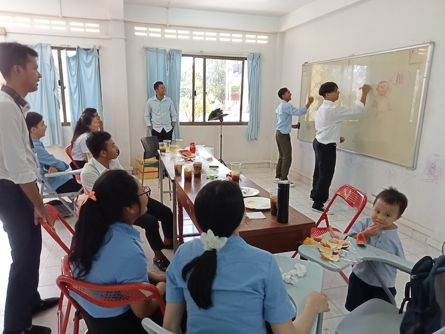
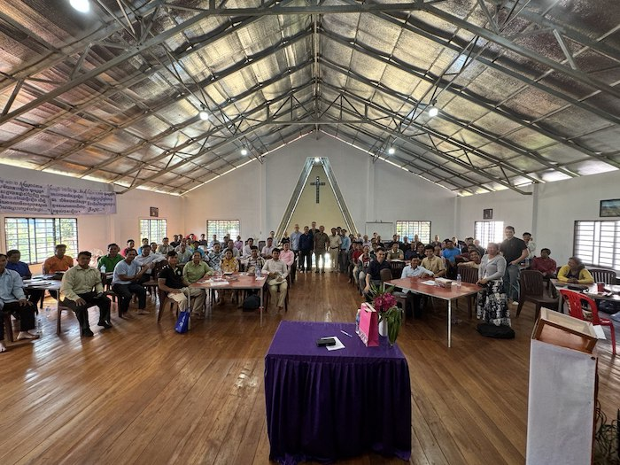
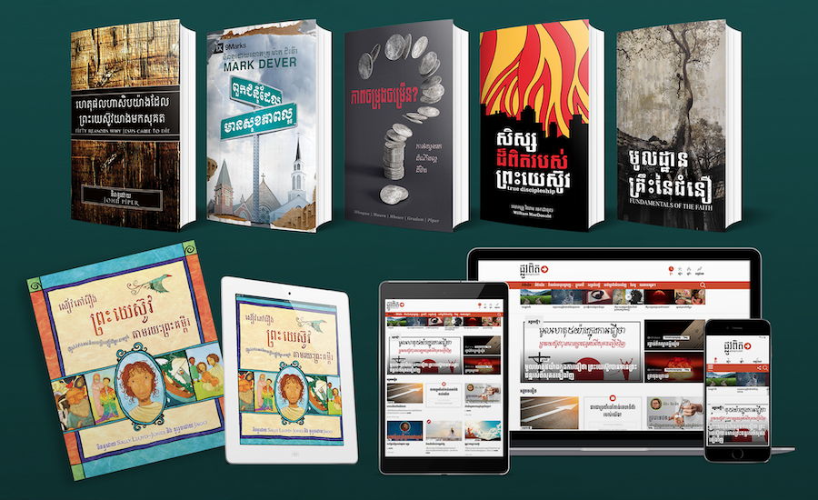

Encouraged in the Lord
What we’ve been up to
Sharing at PPBS Missions Class
 Year-end party in the classroomOne thing Pastor Abraham* shared in class that struck us all was the experience of Christians from the country he is going to, when he brought them to visit Cambodia. He shared that they were very excited and encouraged to be able to join with these Christians in worshiping openly, and were overcome with joy to see Bible schools and other institutions that we take for granted in places where there is religious freedom. On the other hand, they also felt some sadness that they aren’t able to worship like that themselves, in their own homeland. This struck a nerve with many of the PPBS students, as all of us realized what we have but only rarely give thanks to God for.
Praise God for Pastor Abraham’s heart for the lost and for Christ’s glory to be displayed among the nations, and pray that others like him would be raised up among the Church, both to hold the rope and to go down into the well, despite the cost.
Missions to Nearby Country
The day after he presented, we got ready to board the bus and head out to the country where Pastor Abraham* plans to serve full-time starting in 2024.
However, despite our preparations, as it turned out at the last minute Ryan came down with a fever and was unable to join for the initial part of the trip, which was to a nearby SE Asian country. It was a difficult decision to make, but after discussing with other members of the team, it seemed best to all that it would be better for Ryan to stay home and try to rest so he might join in the latter part of the trip, and avoid getting the rest of the group sick in the meantime. As always though, we trust in God’s good providence and that He has a plan for this as well.
Nevertheless, we were encouraged by what we heard and hope to be able to make trips to visit this pastor who is going to work there long-term starting in 2024. Please continue to pray for him, as he is making preparations full-time right now. Hopefully we will be able to visit him and his family in the future as well.
Nearby SE Asian Country -> Border Province
Ryan met Sok* (the Bible school student who was on the trip) when they came back in Cambodia however, and then headed over to meet a missionary working in the area. This missionary is also working with a people group from that same closed country, that are largely unreached in Cambodia. Although it would be difficult to share the gospel with this people group in their own country, it is a wide open field here in Cambodia.
This being the case, we were doubly surprised to hear that theirs is the only church they know of working with this people group in Cambodia, and they are fairly new at it. Nevertheless, praise God for great news, that they had their first five baptisms recently. We are reminded of Christ’s Word, “the harvest is plentiful but the workers are few” - please join us in praying for more harvesters to be sent out.
We hope to share more about this work in the future as well.
Border Province -> Banlung
From there we made our way to Banlung City, in Ratanakiri province, where our teaching is. This is the town where Rebekah and I plan to move in about a year and a half. We had a great time going through Romans 12-16 together, considering how the gospel truths of ch. 1-11 renew our minds and transform our lives, so that we can live “pleasing to Him”.
It was a blessed time in many ways. Last time, we came to Ratanakiri as a family and for the most part spent time with the other missionaries (it was our first time meeting all of them). This time, Sok and I stayed at the church where the training was held and were able to spend much more time with the visiting pastors as well as the brothers from the host church, who had us over for multiple meals.
Student who shared his thankfulness for the trainingsOne conversation in particular struck me. I almost cried for joy hearing him share from his heart how much he just loves coming to these trainings. He has a hard time with some of the more in-depth theological topics and intepretational issues we cover (for him, Khmer is his 2nd language since he is ethnically Jarai), but he soaks up everything he can get. Even more than that, he loves the fellowship with the brothers there.
These trainings has been going on for almost as long as I have been alive, and for many of the pastors it is the only time they see each other. Because of this, they are often staying up quite late at night - some of those attending know this in advance and opt to stay in a guesthouse rather than staying at the church where the training is hosted, since otherwise they find they don’t get enough sleep at night to pay attention to the next day’s training! Which approach is better I cannot say, but for this particular brother, it’s one of his favorite parts - if you have ever been to a Shepherd’s Conference in the States (I’m sure other conferences are much the same way) it’s maybe the closest analogy I can think of.

Pray for lasting fruit and for many of these pastors and teachers as they head back into their respective churches and ministries.
Other Thanksgivings
- We were so grateful to receive a care package from Anchor Bible Church in California! Thank the Lord with us for their love for us and their constant fellowship with us in His work.
Jonathan and his favorite ornament from ABC Neighborhood kids helping decorate for Christmas with little gifts from ABC Samuel and his favorite ornament from ABC Thoughtful gifts ABC sent us a replacement wedding ring for Ryan after he lost his; very grateful!
Prayer Requests
Phnom Penh Bible School kicking off the new school year Besides the above prayer requests, please pray also for the following situations:
- We are continuing to confirm plans for the work in Ratanakiri starting early 2025 as well as other logistical/ministry details. Thank you for your continued prayer for this developing partnership for the gospel.
- Pray for the students at PPBS that they would desire to know Christ through His Word, by the power of the Holy Spirit, and not get distracted by lesser pursuits.
- One concern has been seeing some indications of a lack of clarity in regard to some key gospel truths in students’ lives. Of course, all of us need these reminders about fundamental gospel realities - but just to say, pray for more opportunities to point students back to the gospel.
Giving Opportunity: Plovpit and Action Translation Team
I was recently reminded of the importance of having valuable resources at the training in Ratanakiri. Our team member Jeff came up to join me and learn more about what the training is like. When he was introduced as being part of the team from “Plovpit” (Khmer for “true way”, which is our website’s name), several of the pastors came up to him and thanked him profusely for his work. He tried to tell them he was just part of the marketing team, but that didn’t slow them down at all.
As pastors serving in a country starving for theological resources and tools to help them understand the holy Scriptures, they know more than most the value of having books and articles in their own language, which can help them think through difficult shepherding and interpretational issues.
I am reminded of Iain Murray’s comment, on why Scotland has had such an outsized impact for the Kingdom relative to its small size:
“Foremost among the reasons has to be the recovery of biblical truth, and the persecution that followed, but scarcely less significant was the accompanying literature that moulded successive generations. Books were read, treasured, and then, as their owners approached their closing years, handed on to others. Titles received in this way constituted something of a sacred trust, and that trust came to some of us when we were young”
(Murray, A Scottish Christian Heritage, ix. Emph. added).
 Please pray for a similar impact in the hearts and minds of Christian men and women here in Cambodia as well, as more resources become available. Pray that the distractions and snares of the world would not choke out the affections of believers here, and that the resources being produced now would bear fruit in generations to come.
The translation wing of Action Cambodia is raising money for various projects. You can find more information in the links here.
They are also trying to take some of my lectures from PPBS and turn them into books that can be used within the church and within the classroom. Nathan Wells wrote:
We desire to publish a comprehensive Bible commentary series in Khmer, transforming our teammate Ryan Quey’s Bible lectures from Phnom Penh Bible school into commentaries for pastors and students.
Your support will make these vital resources available to Khmer-speaking believers, fostering spiritual development in the Cambodian Church. Join our mission to enrich biblical understanding through the Cambodian Biblical Exposition Series.
The translation team was also featured in some recent interviews, you can see more here:
For His glory,
Ryan and Rebekah
* Name changed for privacy reasons.